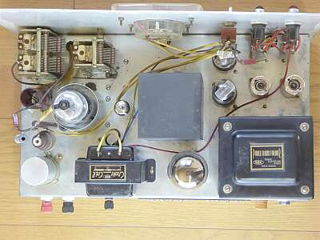
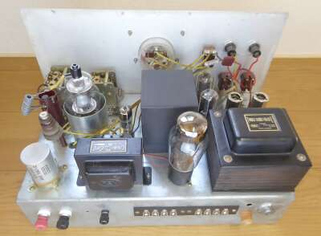
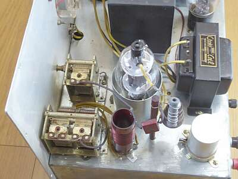
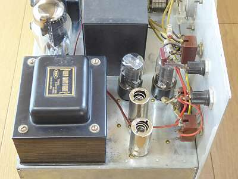
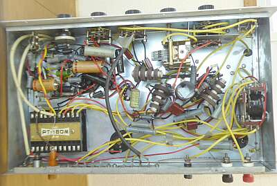
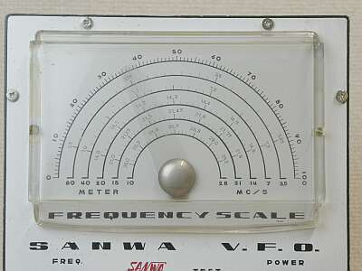
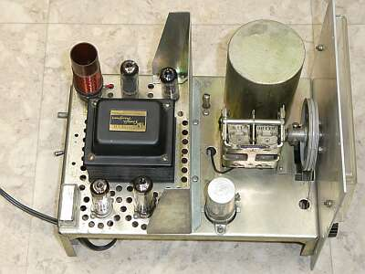
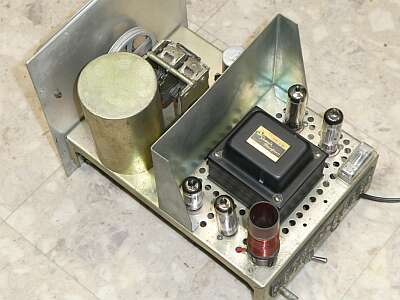
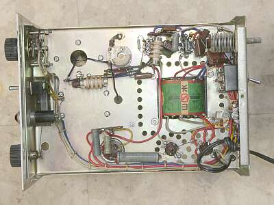
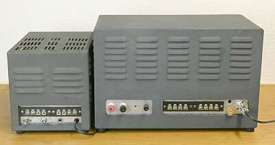

 |
シャーシ上面です
中央の四角の物体は、変調トランスです
送信は、２ステージ
１２ＢＹ７－８０７ です
整流管は、５Ｚ３です |
 |
背面斜めから
アンテナ端子は、Ｍ型ではありません |
 |
８０７は、お決まり？の袴がはかせてあります
ユニークなのは、プレートＲＦＣ
ベーク棒を立てて、そこにグリッド側と同じＲＦＣが縫い付けられています
パラ止め抵抗器には、Ｌ型抵抗器が使ってあります
|
 |
変調器側です
手前２本が、１２ＡＵ７です |
 |
シャーシ下の様子
リレーが大きい！
ＣＷは、この頃のご多分に漏れず、カソードキーイングです
ＡＭは、プレート・スクリーン同時変調です |
|
| ＳＶＦ-４０５ |
 |
一般的な糸掛けダイヤルですが、タッチは非常に良好です
ダイヤル糸の二重掛けのせいかな・・・ |
 |
シャーシ上
VCの上に見える大きな円柱・・・DELICAの巨大IFTみたいに見えるものが発振コイルです
下の2本の真空管は、整流管と定電圧放電管
上の2本が発振とバッファ用のもの
奥左端のコイルは出力同調用で、リンクコイルにより取り出されています
糸掛けダイヤルは､二重に巻かれています |
 |
熱遮蔽板が取り付けられています
真空管の周りには、通気用の穴が開けられています
シールドされた発振コイルといい、この熱シールドといい、安定度を得るための努力がなされています
古い水晶発振子より、安定度が良いと検査官に評されたという検査時のレポート記事を見たことがあります |
 |
シャーシ下
右上に見える同調VCは、その下のスナップ・スイッチと関係して、VFO出力を３．５MHｚ帯とするか、７ＭＨｚ帯とするかの同調用です |
 |
送信機ＳＴＭ-４０６と並んだ様子を、背面から見ると
ＶＦＯにもＫＥＹ端子が用意されています |
ＶＦＯ出力は、約１Wあるようですので、３．５／７ＭＨｚ帯においては、ＶＦＯのままでＱＲＰ ＣＷ送信機になるかもですが、昨今の電波行政下では免許が下りないですね
もし使えれば、出力はハイインピーダンスですので、ショートワイヤなどに向けては、有利かも！？ |
|
第二次大戦後、国内でアマチュア無線が再開されたのは１９５１年ですから、短い期間にアマチュア無線というものが、どんどん進化していったこの頃の様子が推測されます
|
入手した本機ですが、ホコリまみれで掃除が大変だったのですが、湿気は吸っておらず、結果として非常に保存状態の良いものでした
破損があったのは、FT-２４３クリスタルソケットのみ、手持ち品（中古！）で対応しました
ただＡＣケーブルがなく、付いているコネクタは七星の２Ｐのようですので、同じ形状のものは見つからなったのですが、やはり七星の２Ｐプラグを手配しレセプタクルごと交換しました |
|
あまりに程度が良かったので、今度はこの時代の受信機を探そう・・・ついそんな気になってＫＴ-２００/９Ｒ-４Ｊを入手しました（2021.04）
コネクタ、あるいはＶＦＯの入手が出来たので、通電してみなくては・・・ |